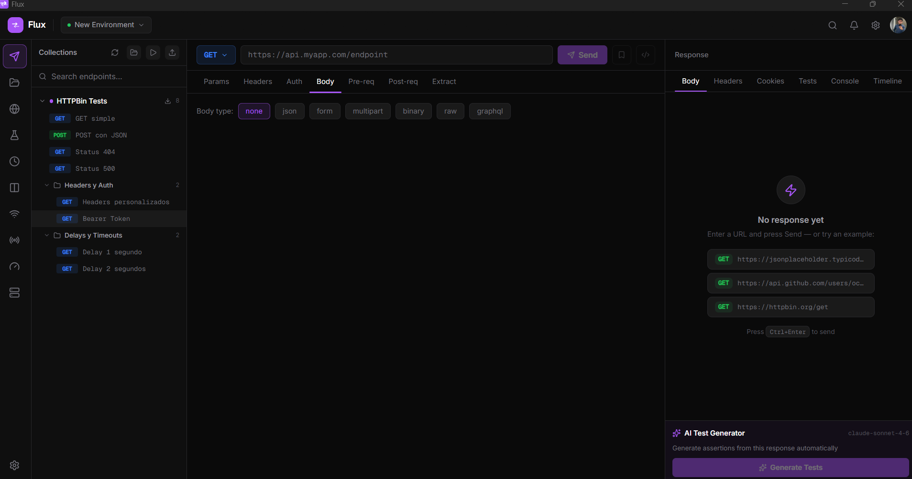
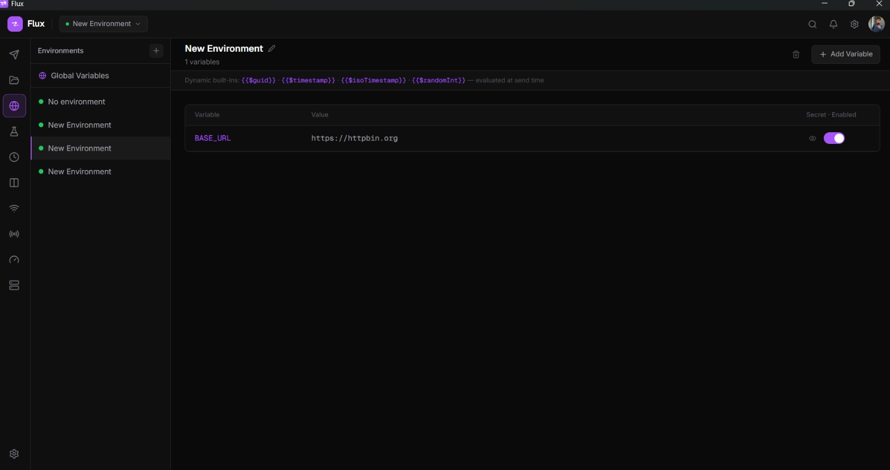
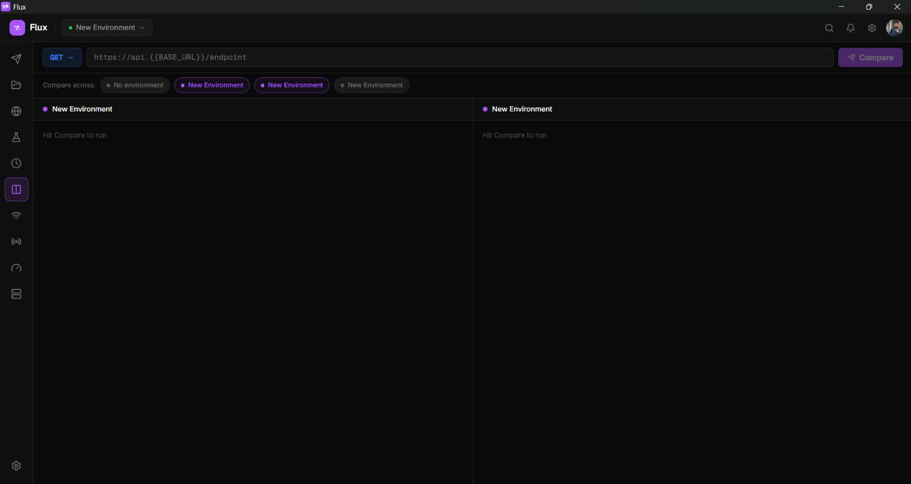
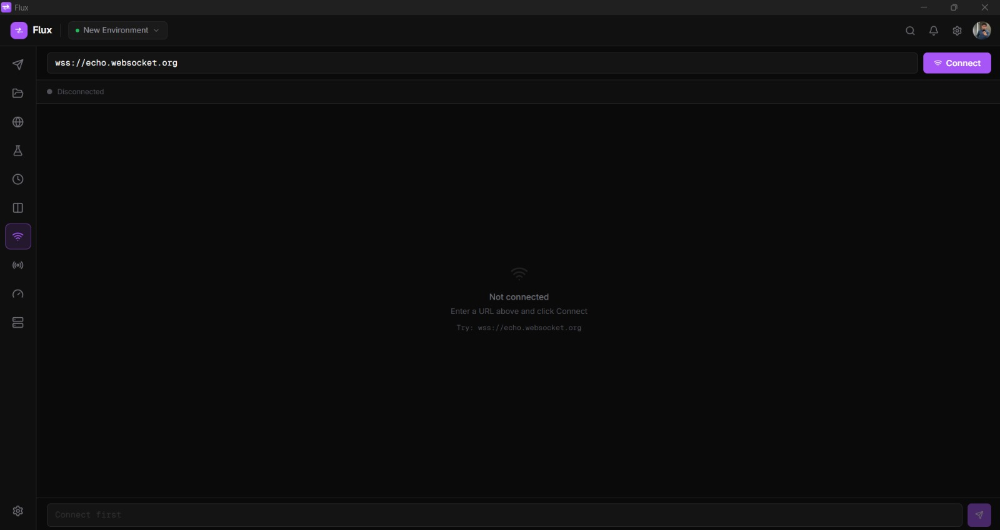
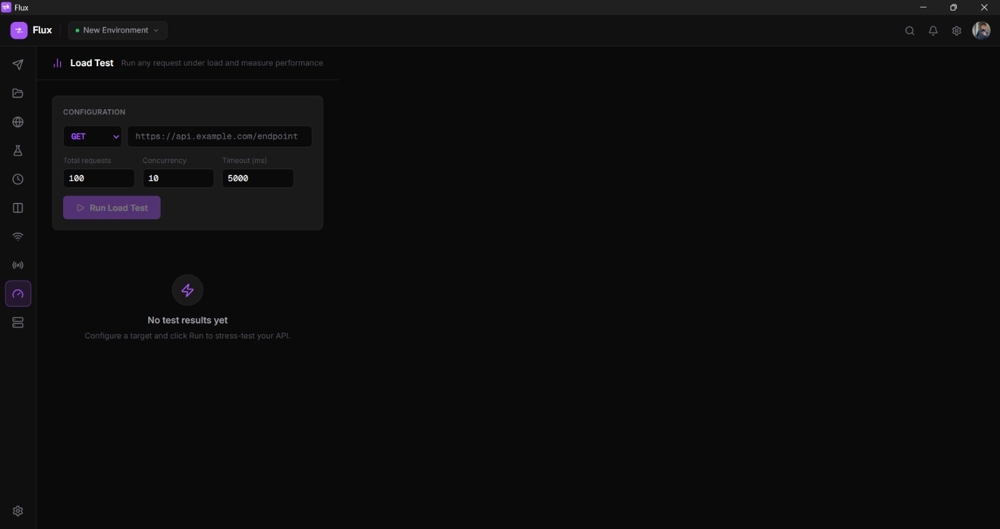
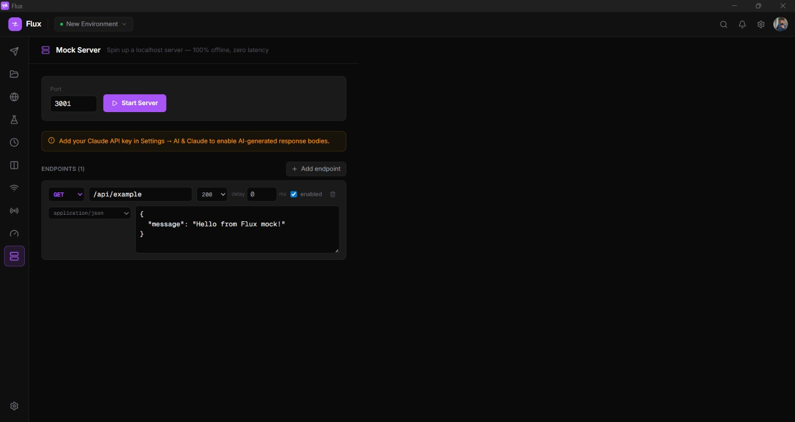
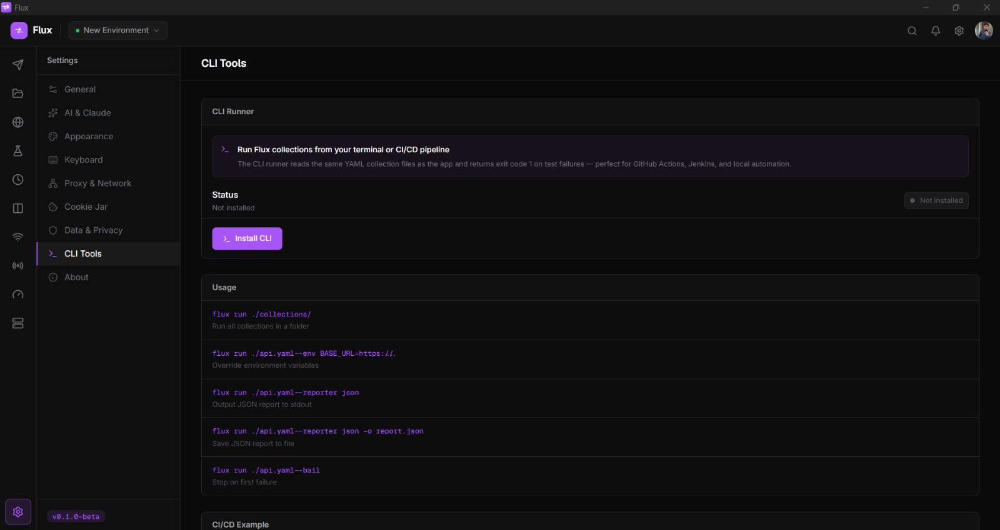

Local-first, AI-powered, cloud-synced. Under 30 MB of RAM, no Electron, no account required to start.

No setup, no config files, no Docker. Open Flux and start testing.
Click any feature to see the actual interface — no mockups, no illustrations.

{{BASE_URL}} anywhere in URLs, headers and body. Switch instantly from the top bar.





Flux is a desktop API client built for speed and simplicity. It runs natively on Windows, macOS and Linux with no Electron overhead. Your data stays local by default, cloud sync is optional and runs on your own Supabase project.
From basic HTTP requests to AI-generated tests, load testing, local mock servers and cloud sync, all in one native desktop app under 30 MB of RAM.
status == 200, body.id != null, duration < 500Flux does not include an API key. You must provide your own Claude API key from Anthropic. It is stored only on your local device and is never sent to Flux servers every AI call goes directly from your machine to Anthropic's API.
To enable: open Settings → AI & Claude, paste your key (starts with sk-ant-) and choose a model. Get your key at console.anthropic.com/account/keys. Usage is billed by Anthropic directly on your account.
/api/users/* matches any sub-pathDownload Flux, open it, and follow these steps to make your first request and explore the features.
Type any URL in the top bar, select a method from the dropdown, and press Ctrl+Enter (or the Send button). The response, status, headers and body, appears in the right panel instantly.
Click the + button in the left sidebar to create a collection, then use Ctrl+S to save the current request into it. Organize requests in named folders by dragging them.
Open the Environments tab, create an environment (e.g. Development) and add a variable like BASE_URL = https://api.example.com. Reference it anywhere as {{BASE_URL}}, in URLs, headers and body.
In the Tests tab of any request, add assertions like status == 200 or body.id != null. After sending, each assertion shows pass or fail. Use Generate Tests with AI for a one-click suite from the response.
Go to Settings → AI & Claude, paste your Claude API key (starts with sk-ant-). This unlocks test generation, debug assist on errors, script editing and batch failure analysis.
Click the import button in the Collections sidebar to paste a Postman v2.1 JSON, an OpenAPI 3.x spec, or a cURL command. Flux converts it to a collection automatically.
Open the Mock Server tab from the left nav. Add endpoints (method, path, status, body), set a port and
click Start. Your local server is live at http://localhost:3001 instantly
no Docker, no config files.
Open the Load Test tab, set total requests and concurrency, and click Run. Watch the live progress bar and see min / avg / P95 / P99 latency, throughput and error rate the moment the test finishes.
Download the installer for your platform and run it. No dependencies, no runtime, no administrator rights required on Windows.
sudo dpkg -i Flux_x.x.x_amd64.deb
chmod +x Flux_*.AppImage, then
run it directly.Every common action has a shortcut. Open the command palette with Ctrl+K to search and discover all available commands.
Quick answers to what people ask most.
Three reasons, each on its own makes it non-negotiable:
How to set it up
Open Settings → AI & Claude, paste your key (starts with sk-ant-), and pick a model. Get your key at console.anthropic.com/account/keys.
Your API key is stored only on your local device using the OS secure storage. It is explicitly excluded from cloud sync, even if you sign in to sync your collections, the key never leaves your machine.
Request bodies, response bodies, and everything you send through Flux goes directly from your device to the target server (or to Anthropic when using AI features). Flux has no relay server in the middle.
Flux itself is free. The only cost is what Anthropic charges for the API calls you make, billed directly to your Anthropic account. In practice, typical developer use (generating tests, debugging errors) costs a few cents per month, AI calls in Flux are short, focused prompts, not long conversations.
You can monitor your exact usage at console.anthropic.com/usage. The cheapest model (Haiku) is recommended for everyday use; switch to Sonnet when you need deeper reasoning.
Yes, all core features work without an internet connection: sending HTTP requests, running tests, the mock server, load testing, environment variables, code snippets, and the CLI runner. The only features that require a connection are the AI functions (which call Anthropic's API) and cloud sync (optional).